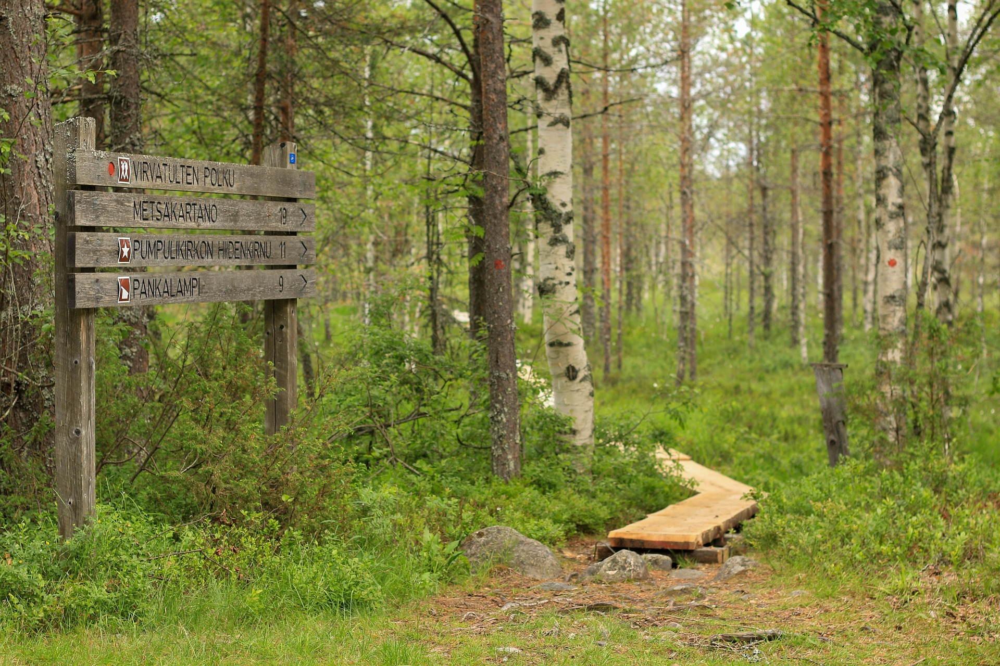

Retkivinkit
Hyvin valmisteltu retki on mukavampi. Tässä tärkeimmät asiat ennen lähtöä.
Pakkauslista
- Säänmukaiset vaatteet ja sadetakki
- Hyvät kengät
- Vesipullo ja eväät
- Kartta tai ladattu karttasovellus
- Ensiaputarvikkeet
Retkietiketti
- Pysy merkityillä reiteillä.
- Tee tulet vain merkityille tulipaikoille.
- Vie roskat mukanasi.